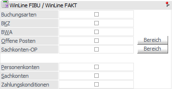
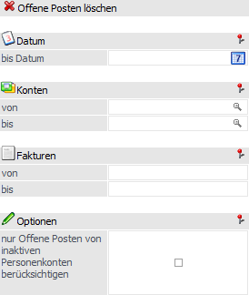
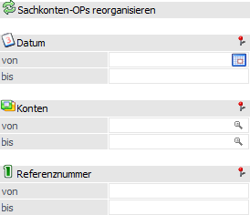

Über diesen Bereich können Bestandteile aus der WinLine FIBU und der WinLine FAKT reorganisiert werden.

Buchungsarten
Alle Buchungsarten, für die folgendes gilt, werden gelöscht:
ü inaktiv gesetzt
ü darf keine Standardbuchungsart sein
ü darf in keinem Stapel mehr verwendet werden.
BKZ
Alle Bilanzgliederungskennzahlen, für die folgendes gilt, werden gelöscht:
ü inaktiv gesetzt
ü bei keinem Konto hinterlegt
BWA
Alle BWA-Kennzahlen, für die folgendes gilt, werden gelöscht:
ü inaktiv gesetzt
ü bei keinem Konto hinterlegt
Offene Posten
Alle Offenen Posten, für die folgendes gilt, werden gelöscht:
ü älter als ein eingegebenes Schwellendatum
ü Mahnstufe -1
ü kein Stapel -1 vorhanden
Wird die Checkbox "Offene Posten" aktiviert oder auf den Button "Bereich" geklickt, so wird automatisch ein Fenster geöffnet, in dem eine OP-Selektionen vorgenommen werden kann.
Hinweis
Es muss zumindest das Feld "bis Datum" ausgefüllt werden. Ist dem nicht der Fall, so wird die Checkbox "Offene Posten" nach dem Bestätigen der Selektion wieder deaktiviert.

Ø bis Datum
Eingabe des Zeitpunktes, bis zum dem ausgeglichene Fakturen gelöscht werden sollen.
Ø Konten von / bis
Einschränkung der Konten, für die ausgeglichene Fakturen gelöscht werden sollen. Durch Drücken der F9-Taste kann nach allen angelegten Konten gesucht werden.
Ø Fakturen von / bis
Einschränkung der Fakturennummern, die gelöscht werden sollen.
Ø nur Offene Posten von inaktiven Personenkonten berücksichtigen
Durch Aktivierung der Checkbox werden nur die inaktiven Personenkonten berücksichtigt, dadurch können die betroffenen OPs entsprechend eingeschränkt werden.
Sachkonten-OP
Beim Start des Reorgs werden alle Sachkonten-OP lt. Einstellung gelöscht, die im aktuellen Wirtschaftsjahr nicht mehr bebucht wurden.
Wird die Checkbox "Sachkonten-OP" aktiviert oder auf den Button "Bereich" geklickt, so wird automatisch ein Fenster geöffnet, in dem eine Sachkonten-OP-Selektionen vorgenommen werden kann.
Hinweis
Es muss zumindest das Feld "Datum von / bis" ausgefüllt werden. Ist dem nicht der Fall, so wird die Checkbox "Sachkonten-OP" nach dem Bestätigen der Selektion wieder deaktiviert.

Ø Datum von / bis
Hier kann eine Einschränkung des Datumsbereiches vorgenommen werden, für den Sachkonten-OP`s gelöscht werden sollen.
Ø Konten von / bis
Hier kann eine Einschränkung des Kontenbereiches vorgenommen werden, für den Sachkonten-OP`s gelöscht werden sollen.
Ø Referenznummer von / bis
Hier kann eine Einschränkung der Referenznummern vorgenommen werden, für den Sachkonten-OP`s gelöscht werden sollen.
Personenkonten
Alle Personenkonten, für die folgendes gilt, werden gelöscht:
ü inaktiv gesetzt
ü keine Journalzeilen vorhanden
ü allen Summen auf 0
ü kein Eintrag im einem Stapel mit Stapelnr. < 0
ü Offene Posten auf -1
ü keine CRM-Fälle (WEB Edition) vorhanden
ü nicht als Zahlungssammelkonto, Factoring-Konto, Mahnungssammelkonto oder Skontokonto bei einem anderen Personenkonto hinterlegt.
ü nicht in den FIBU-Parametern als Abgrenzungskonto hinterlegt
Sachkonten
Alle Sachkonten, für die folgendes gilt, werden gelöscht:
ü inaktiv gesetzt
ü keine Journalzeilen vorhanden
ü allen Summen auf 0
ü kein Eintrag in einem Stapel mit Stapelnr. <> 0
ü Konto ist kein Steuerkonto im Unternehmensstamm
ü Konto ist kein Skontokonto im Unternehmensstamm
ü Konto ist keinem Konto als Hauptbuchkonto zugewiesen
Zahlungskonditionen
Alle Zahlungskonditionen, für die folgendes gilt, werden gelöscht:
ü inaktiv gesetzt
ü bei keinem Konto hinterlegt